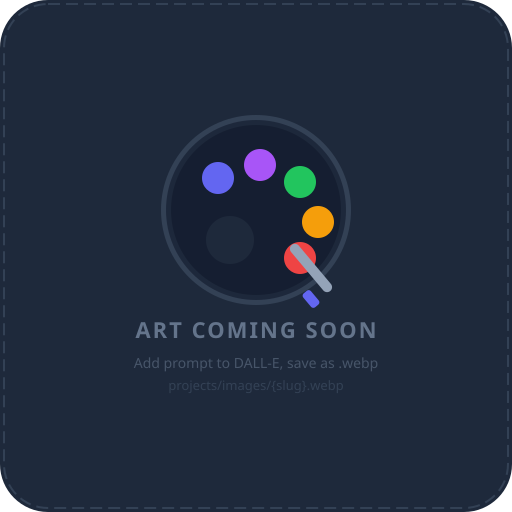

approval-portal
software
0.0% complete · 5 milestones · 5 tasks
Spec the portal: data sources, screens, and repo-write strat
ready
Build read-only dashboard from repo data
waiting
Pitch voting that writes approve/reject back to the repo
waiting
One-click rollback via git revert
waiting
Plan auth + deploy (do NOT deploy)
waiting
brainstorm
proposal
0% complete · 1 milestones · 1 tasks
Generate this cycle's pitches
ready
coat-dance
content
0.0% complete · 3 milestones · 1 tasks
Draft concept brief for Silas to review
needs-human
digital-storefront
content
0.0% complete · 5 milestones · 5 tasks
Research candidate stores/platforms and recommend a shortlis
ready
Brainstorm content concepts for the chosen stores
waiting
Create first product drafts from approved concepts
waiting
Identify organic marketing channels for the products
waiting
Draft paid-ad plans for human-budgeted channels
waiting
humboldt-poop-scoop-cms
software
0.0% complete · 5 milestones · 2 tasks
Propose a stack + scaffold a running skeleton
ready
Design the customer + property schema
ready
humboldt-scoop
software
5.0% complete · 5 milestones · 2 tasks
Confirm the loop: trivial no-op PR through the full cycle
ready
Audit the imported site and report build/run steps
ready
kind-robots
software
0.0% complete · 2 milestones · 2 tasks
Draft the app/backend boundary doc for Silas to approve
ready
Generate project card images for the workspace UI (ChatGPT/D
needs-human
mermaids-of-venice
content
0.0% complete · 3 milestones · 1 tasks
Draft concept brief for Silas to review
needs-human
Generate each image with DALL-E 3 using the prompt below, export as .webp (512px, 1:1),
and save to the listed path. Cards update automatically on next build.
Add a CI build/lint gate for software projects
2026-06-24 · target: ai-networker-itself
Add a lightweight GitHub Actions CI check (lint + build) that runs on every worker/* PR,
so the Reviewer has a green-checks signal to merge against instead of judging by eye.
"Acts of Kindness" coloring book (PDF + POD)
2026-06-24 · target: digital-storefront
A coloring book where each page illustrates a small act of kindness — feeding a stray,
planting a tree, helping a neighbor — with a one-line prompt to do that act this week.
Ties directly to the Kind
Per-cycle cost + run-budget guard for AI_Networker
2026-06-24 · target: ai-networker-itself
A small check the Worker runs each cycle that tracks how many agent runs/PRs happened
today and pauses new work (writing a notice to STATUS.md) if a daily budget is hit —
protecting against the Pro-ti